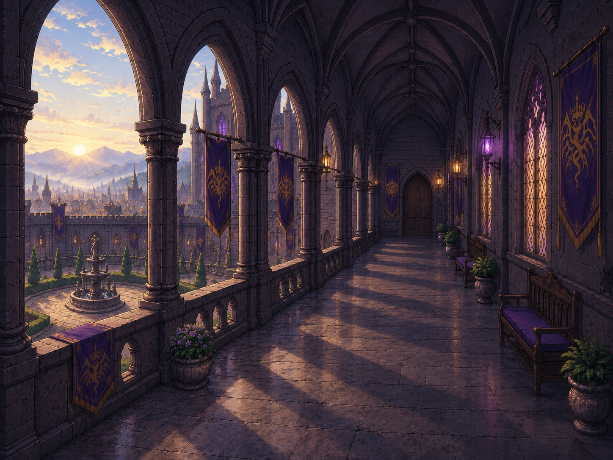
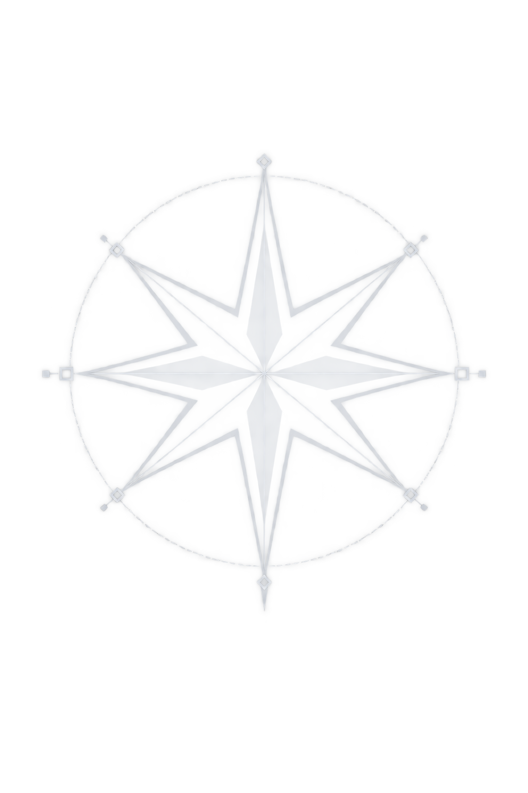
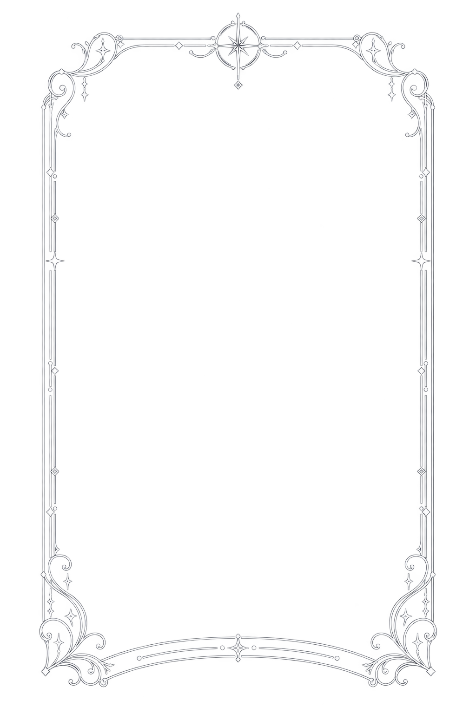

携帯端末 / Hub2 の開閉の試作
帯スイープ
原作者の仕様書（docs/10-design/ui/MENU_HUB2_SPEC_2026-11-08.md）の §3-12・§3-14・§3-15 どおりの開閉。右上の CLOSE の星で閉じ、探索の MENU の星で開きます。メニューの中身は、仕様書の数値で主な部品を並べた見本です（Claude Design のモックそのものではありません）。

 NEW
NEW
PROLOGUE百年戦争と祝賀会の朝
オルクス城・回廊
支援の深い仲間
STATUS
所持金FUNDS—G
名声FAME—pt


運命予報
Fortune
蛇
失せモノに注意。
笑う声が聞こえたら、
振り返らないこと。
素材を読み込み中…
CLOSE の星で閉じる（星が弾ける0.28秒 → 帯1.75秒、覆いきった0.875秒で探索へ）。MENU の星で開く（逆向きに帯 → 覆いきった瞬間にメニュー → CLOSE の星が着地0.5秒）。演出中は入力を受け付けません。Escでも開閉。CLOSE／MENU の星の元の画像（素材 C）が見つからないため、星はコードで描いた仮の物です。立ち絵は全身の絵を胸から上に切り出して代わりにしています（仕様書は胸上の立ち絵）。